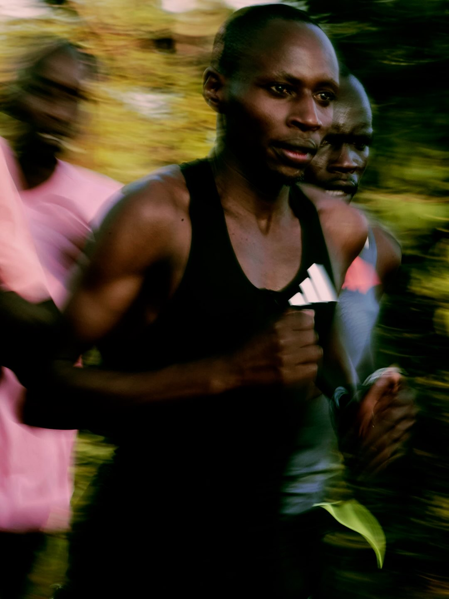

01
IYFY Education
Artigos, ciência, saúde, nutrição e conhecimento para ajudar você a entender melhor a corrida.
Ver artigos →
Uma comunidade para quem escolheu se movimentar, evoluir e viver a corrida do seu jeito.
CONHEÇA A IYFYA IYFY Running nasceu para conectar pessoas através da corrida. Aqui você encontra conhecimento, treinos, eventos e experiências para tornar sua jornada mais leve, consistente e significativa.
Artigos, ciência, saúde, nutrição e conhecimento para ajudar você a entender melhor a corrida.
Ver artigos →
Planilhas e conteúdos para ajudar você a treinar com mais organização e consistência.
Conhecer os treinos →
Faça parte de uma comunidade que acredita que cada pessoa tem sua própria jornada.
Fazer parte →Compartilhamos experiências, histórias e desafios para que cada quilômetro tenha um significado.
SIGA A IYFY